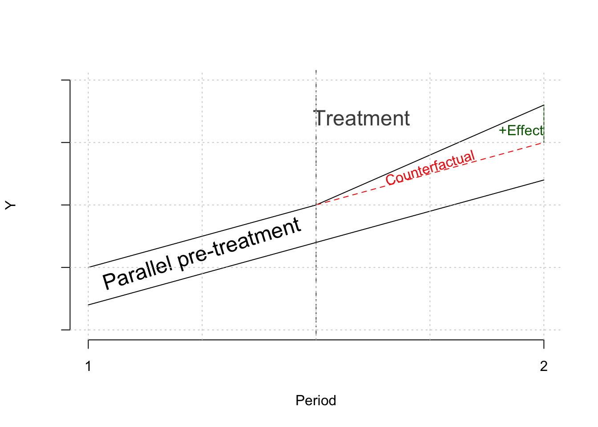

Code
library(dplyr)
Attaching package: 'dplyr'The following objects are masked from 'package:stats':
filter, lagThe following objects are masked from 'package:base':
intersect, setdiff, setequal, unionCode
y_j <- c(0.5, 1, 1.8)
y_j_counter <- c(0.5, 1, 1.5)
y_k <- c(0.2, 0.7, 1.2)
x <- c(1,2,3)
plot(
x, y_k,
type = "l",
ylim = c(0, 2),
xaxt = "n", yaxt = "n",
ylab = "Y", xlab = "Period",
bty= "n"
)
axis(side=2, labels = FALSE, at = NULL)
axis(side=1, at=c(1,3), labels=c("1", "2"))
lines(x, y_j)
lines(x[2:3], y_j_counter[2:3], lty = 2, col = "red")
lines(c(3, 3), c(1.5, 1.8), col = "darkgreen")
abline(v = 2, lty = 4, col = "gray30")
text(
x = 1.5, y = 0.6,
labels = "Parallel pre-treatment",
cex=1.5, srt = 17
)
text(
x = 2.2, y = 1.7,
labels = "Treatment",
cex=1.5, col = "gray30"
)
text(
x = 2.5, y = 1.3,
labels = "Counterfactual",
col = "red", srt = 17
)
text(
x = 2.9, y = 1.6,
labels = "+Effect",
col = "darkgreen"
)
grid()